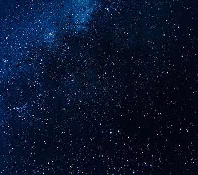
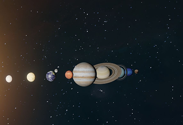
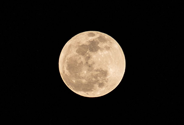
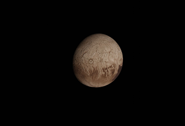
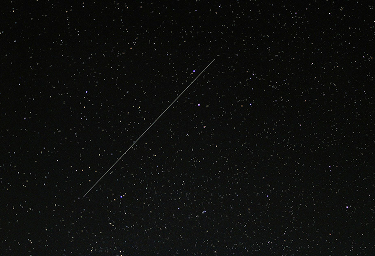
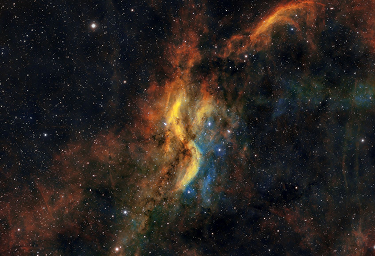
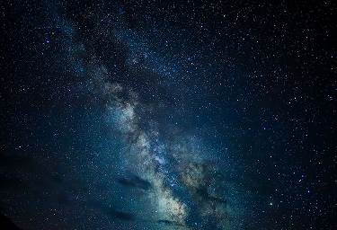
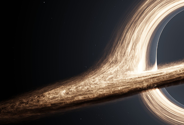

O Universo é formado por uma enorme variedade de corpos e estruturas celestes, cada um com características e
propriedades próprias. Estrelas, planetas, satélites naturais, cometas, asteroides e muitos outros objetos
fazem parte desse imenso cenário.
Esses elementos podem variar em tamanho, composição, temperatura e forma de organização. Alguns produzem
luz e energia, enquanto outros refletem a luz de estrelas ou interagem por meio da gravidade.
Conhecer os diferentes tipos de astros nos ajuda a compreender melhor a formação, a composição e o
funcionamento do Universo.

Estrelas são enormes esferas de plasma que produzem luz e energia por meio de reações de fusão nuclear em seu interior. São fundamentais para o Universo, pois fornecem energia e participam da formação de diversos elementos químicos.
As estrelas nascem em grandes nuvens de gás e poeira chamadas nebulosas. A gravidade faz com que esse material se concentre e aqueça cada vez mais, até que as condições necessárias para iniciar a fusão nuclear sejam alcançadas.
As estrelas passam por diferentes etapas ao longo de sua existência. Geralmente, nascem em nebulosas, passam grande parte da vida transformando hidrogênio em hélio e, ao envelhecer, podem se tornar gigantes ou supergigantes. Seu destino final depende principalmente de sua massa, podendo originar anãs brancas, estrelas de nêutrons ou buracos negros.
O Sol é uma estrela de tamanho intermediário e possui aproximadamente 4,6 bilhões de anos. Ele ainda está na fase principal de sua vida.

Planetas são corpos celestes que orbitam uma estrela, possuem gravidade suficiente para adquirir um formato aproximadamente esférico e dominam gravitacionalmente a região de sua órbita. Diferentemente das estrelas, não produzem luz própria por fusão nuclear, sendo visíveis principalmente pela luz que refletem.
Os planetas se formam a partir de discos de gás e poeira que ficam ao redor de estrelas jovens. Com o passar do tempo, pequenas partículas se unem pela gravidade, formando corpos maiores que podem dar origem aos planetas.
Os planetas realizam dois movimentos principais: a rotação, que acontece em torno do próprio eixo, e a translação, que corresponde ao movimento ao redor de sua estrela. Esses movimentos estão relacionados a fenômenos como a duração dos dias e dos anos.
Júpiter é o maior planeta do Sistema Solar e possui uma tempestade gigantesca conhecida como Grande Mancha Vermelha, observada há séculos.

Satélites naturais são corpos celestes que orbitam planetas ou outros corpos maiores. Podem apresentar diferentes tamanhos e composições, sendo conhecidos popularmente como luas. A Lua é o satélite natural da Terra.
Os satélites naturais podem surgir de diferentes maneiras. Alguns se formam a partir de materiais que permanecem ao redor de um planeta durante sua formação. Outros podem ser resultado de grandes colisões ou corpos capturados pela gravidade de um planeta.
Os satélites naturais permanecem em órbita devido à atração gravitacional do corpo que orbitam. Alguns também exercem influência sobre seus planetas, como acontece com a Lua, que contribui para as marés terrestres.
Ganimedes, uma das luas de Júpiter, é o maior satélite natural do Sistema Solar. Seu diâmetro é maior que o do planeta Mercúrio.

Planetas anões são corpos celestes que orbitam o Sol, possuem massa suficiente para adquirir um formato aproximadamente esférico, mas não conseguiram dominar gravitacionalmente a região de sua órbita. Eles não são considerados planetas nem satélites naturais.
Assim como os planetas, os planetas anões se formam a partir da união de materiais presentes no disco de gás e poeira que existia ao redor do Sol durante sua formação. Alguns permaneceram em regiões mais distantes, onde continuaram seu desenvolvimento.
Os planetas anões realizam movimentos de rotação e translação, assim como os planetas. Entretanto, não dominam gravitacionalmente suas regiões orbitais, característica que os diferencia dos oito planetas do Sistema Solar.
Plutão era considerado o nono planeta do Sistema Solar até 2006, quando passou a ser oficialmente classificado como planeta anão. Outros exemplos são Ceres, Eris, Haumea e Makemake.

Asteroides são pequenos corpos celestes que orbitam o Sol e são formados principalmente por rochas e metais. Possuem diferentes tamanhos e formatos, sendo considerados materiais remanescentes da formação do Sistema Solar.
Os asteroides são restos de materiais que não chegaram a se unir para formar planetas durante o desenvolvimento do Sistema Solar. Muitos permaneceram concentrados em regiões específicas, especialmente no cinturão de asteroides.
Os asteroides realizam movimentos de translação ao redor do Sol e podem seguir diferentes trajetórias. Alguns possuem órbitas que passam relativamente próximas da Terra, sendo monitorados por cientistas.
O asteroide Bennu é estudado pela NASA e foi visitado pela missão OSIRIS-REx, que trouxe amostras de sua superfície para a Terra em 2023.

Nebulosas são enormes nuvens de gás e poeira presentes no espaço interestelar. Elas podem apresentar diferentes formatos, tamanhos e cores, sendo importantes para o nascimento e a evolução das estrelas.
As nebulosas podem surgir do acúmulo de gás e poeira no espaço ou da liberação de materiais por estrelas em diferentes fases de sua evolução. Algumas são formadas por restos de estrelas que chegaram ao final de suas vidas.
Algumas nebulosas funcionam como verdadeiros berçários estelares, pois possuem regiões onde o gás e a poeira se concentram pela gravidade, podendo dar origem a novas estrelas. Outras são formadas por materiais liberados por estrelas em suas fases finais.
A Nebulosa de Órion é uma das regiões de formação de estrelas mais conhecidas e pode ser observada da Terra, inclusive sem telescópios em condições favoráveis.

Galáxias são enormes sistemas formados por bilhões de estrelas, planetas, gás, poeira e matéria escura, mantidos unidos pela gravidade. Elas apresentam diferentes tamanhos e formatos e podem conter desde milhões até trilhões de estrelas.
As galáxias se desenvolveram ao longo de bilhões de anos a partir de concentrações de matéria no Universo primitivo. A gravidade reuniu gás, poeira e matéria escura, permitindo a formação de estrelas e de estruturas cada vez maiores.
As galáxias são mantidas pela gravidade e seus componentes realizam diferentes movimentos ao redor de seus centros. Elas também podem interagir, colidir e se fundir com outras galáxias ao longo de bilhões de anos.
A Via Láctea é a galáxia onde está localizado o Sistema Solar. Ela possui formato espiral e abriga centenas de bilhões de estrelas, incluindo o Sol.

Buracos negros são regiões do espaço-tempo onde a gravidade é tão intensa que nada consegue escapar de seu interior após ultrapassar uma região chamada horizonte de eventos, nem mesmo a luz. Eles não são buracos vazios, mas concentrações extremamente densas de massa.
Alguns buracos negros se formam quando estrelas muito massivas chegam ao final de suas vidas e sofrem um colapso gravitacional. Existem também buracos negros supermassivos, encontrados nos centros de muitas galáxias, cuja origem ainda é estudada pelos cientistas.
A gravidade de um buraco negro influencia tudo que está ao seu redor. Quando matéria se aproxima, ela pode formar um disco de acreção, no qual o material é aquecido e pode emitir grandes quantidades de radiação antes de atravessar o horizonte de eventos.
Sagittarius A* é o buraco negro supermassivo localizado no centro da Via Láctea. Ele possui aproximadamente quatro milhões de vezes a massa do Sol.